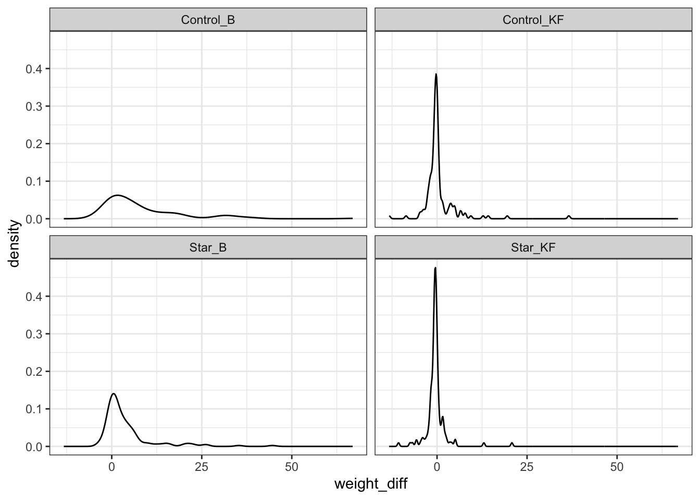
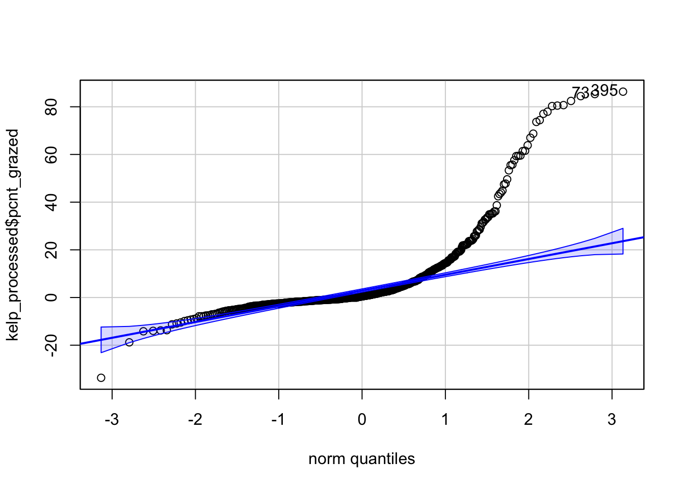
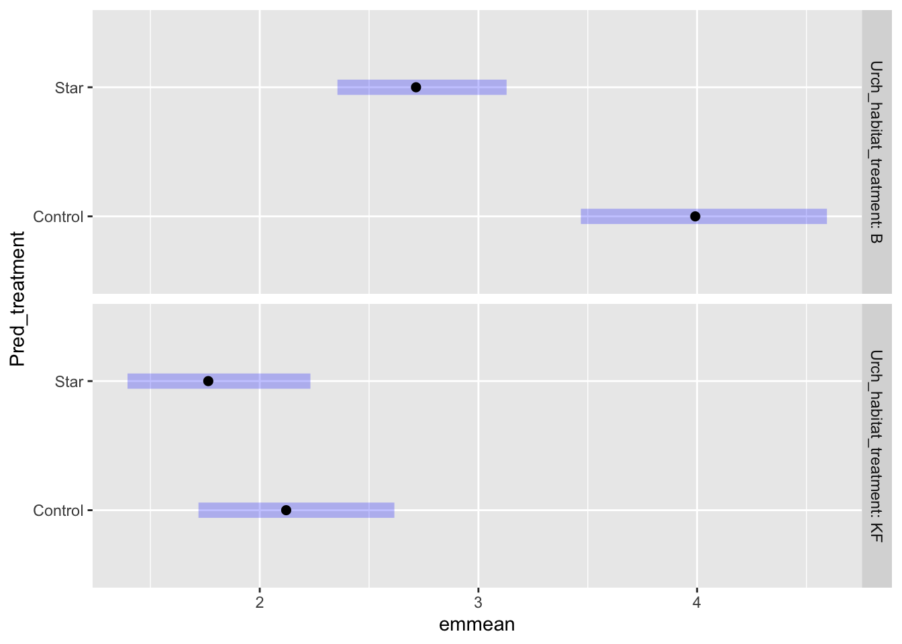

Analysis of urchin grazing data for PycnoPie experiment on sunflower star indirect effects on kelp with urchins from different source habitats conducted in Sitka, AK in summer of 2024.
Kelp grazing data
Building models and contrasts
Investigating distribution of response variable and test for normality.
Code
#releveling reference groups kelp_processed$Urch_habitat_treatment <-relevel(kelp_processed$Urch_habitat_treatment, ref ="KF")kelp_processed$Pred_treatment <-relevel(kelp_processed$Pred_treatment, ref ="Control")#investigating distributions ggplot(kelp_processed, aes(x = weight_diff)) +geom_density() +facet_wrap(vars(Treatment)) +theme_bw()#test for normalityqqPlot(kelp_processed$weight_diff)


Linear mixed-effects model for difference in kelp weight
Calculating estimated marginal means from the linear mixed-effects model, and calculating pairwise contrasts based on a priori hypotheses based on custom contrast weights
Pred_treatment Urch_habitat_treatment emmean SE df lower.CL upper.CL
Control KF 0.531 0.683 42.3 -0.846 1.909
Star KF -0.395 0.683 42.3 -1.773 0.982
Control B 8.182 0.683 42.3 6.804 9.560
Star B 3.928 0.683 42.3 2.550 5.305
Degrees-of-freedom method: kenward-roger
Confidence level used: 0.95
Code
#specifying weights for contrastscontrast_weights <-list("a) Control kelp forest vs. Control barren"=c(control_kf =1,star_kf =0,control_b =-1,star_b =0),"b) Star kelp forest vs. Star barren"=c(control_kf =0,star_kf =1,control_b =0,star_b =-1),"c) Control kelp forest vs. Star kelp forest"=c(control_kf =1,star_kf =-1,control_b =0,star_b =0),"d) Control barren vs. Star barren"=c(control_kf =0,star_kf =0,control_b =1,star_b =-1))#pairwise contrasts w above weighting schememod_contrasts <-contrast(EMM, contrast_weights)#flextable formattingft <- mod_contrasts %>%data.frame() %>%mutate(p.value =ifelse(p.value <0.0001, "< 0.0001",round(p.value,3))) %>%#hypothesis columnmutate("Hypothesis"=c("Urchins from kelp forests will graze less than urchins from barrens","Urchins in the presence of a star will graze less when they are from kelp forests compared to urchins from barrens","Urchins from kelp forests will graze more when they are not around a star","Urchins from barrens will graze more when they are not around a star"),.after ="contrast") %>%flextable() %>%#header formattingset_header_labels(contrast ='Contrast',emmean ='Estimate',SE ='s.e.',df ='d.f.',t.ratio ="t-ratio",p.value ="p-value") %>%bold(i =1, part ="header") %>%italic(part ="all", j =1) %>%align(align ='center', part ='header') %>%#body formatting#change size of hypothesis column fontsize(j =2, size =8, part ="body") %>%colformat_double(j =c(3:7), digits =2) %>%bold(~ p.value <0.05, j ="p.value") %>%vline_left() %>%vline_right() %>%autofit() ft
Contrast
Hypothesis
estimate
s.e.
d.f.
t-ratio
p-value
a) Control kelp forest vs. Control barren
Urchins from kelp forests will graze less than urchins from barrens
-7.65
0.91
33.00
-8.42
< 0.0001
b) Star kelp forest vs. Star barren
Urchins in the presence of a star will graze less when they are from kelp forests compared to urchins from barrens
-4.32
0.91
33.00
-4.76
< 0.0001
c) Control kelp forest vs. Star kelp forest
Urchins from kelp forests will graze more when they are not around a star
0.93
0.91
33.00
1.02
0.315
d) Control barren vs. Star barren
Urchins from barrens will graze more when they are not around a star
4.25
0.91
33.00
4.68
< 0.0001
Plots:
Bar chart of raw data showing change in kelp weight across treatments. Significance bars manually added based on significant pairwise contrasts.
Code
#plots of raw data:#releveling reference groups (this is just bc i manually labelled x axis formatting stuff based on indexing position, and first is barren second is kf)kelp_processed$Urch_habitat_treatment <-relevel(kelp_processed$Urch_habitat_treatment, ref ="B")kelp_processed$Pred_treatment <-relevel(kelp_processed$Pred_treatment, ref ="Control")#bar chart dw <-0.9# dodge widthoff <- dw /4ggplot(kelp_processed, aes(x = Urch_habitat_treatment, y = weight_diff_mean, fill = Pred_treatment)) +geom_bar(stat ="identity", position =position_dodge(width=dw)) +geom_errorbar(aes(ymin = weight_diff_mean-weight_diff_se, ymax =weight_diff_mean+weight_diff_se),position=position_dodge(width=dw),width =0.1) +labs(title ="Kelp grazed by urchins from different source habitats", x ="Urchin habitat", y ="Mean difference in kelp weight (g)", #specify across the 12 blades in a tankfill ="Pred treatment",caption ="* p < 0.05, ** p < 0.01, *** p < 0.0001 ") +theme_classic() +theme(plot.caption =element_text(color ="grey40", hjust =1.5)) +scale_fill_manual(values =c('#5A5A5A','#c994c7')) +ylab("Mean difference in kelp weight (g)") +scale_x_discrete(labels =c("Barren","Kelp forest")) +labs(fill ="Predator treatment") +#significance bars:#Barren control vs. barren star (***)geom_bracket(inherit.aes =FALSE,xmin =1- off, # barren controlxmax =1+ off, # barren stary.position =9.9,label ="***",color ="grey40", alpha =0.7, size =0.5, vjust =0.5 ) +#Barren control vs. kelp forest control (***)geom_bracket(inherit.aes =FALSE,xmin =1- off, # barren controlxmax =2- off, # kelp forest controly.position =11,label ="***",color ="grey40", alpha =0.7, size =0.5, vjust =0.5 ) +#Barren star vs. kelp forest star (***)geom_bracket(inherit.aes =FALSE,xmin =1+ off, # barren starxmax =2+ off, # kelp forest stary.position =5.3,label ="***",color ="grey40", alpha =0.7, size =0.5, vjust =0.5 )

Key takeaways:
Urchins graze less around a star for both kelp forest and barren treatments
Grazing rates for urchins from a barren are more affected by the presence of a star than urchins from a kelp forest